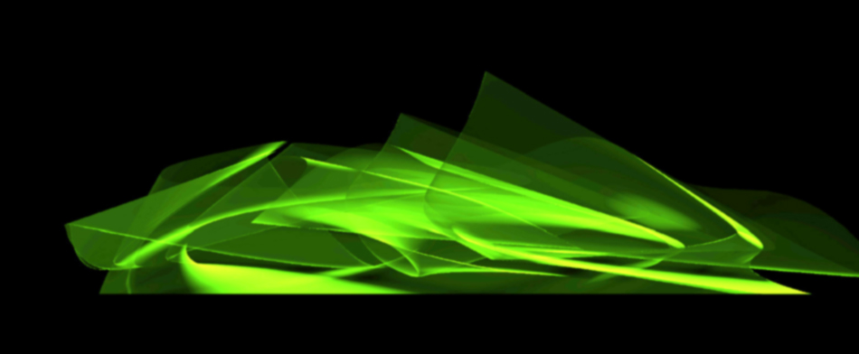
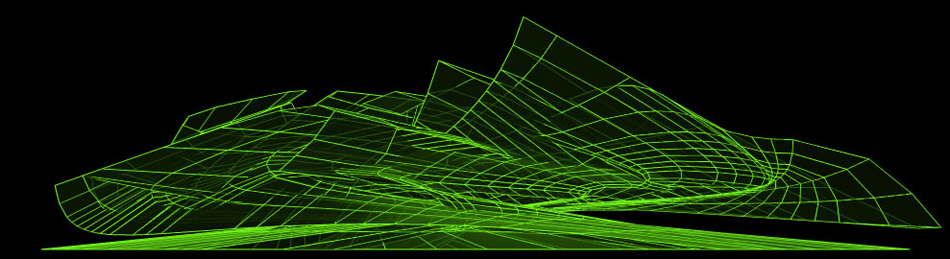
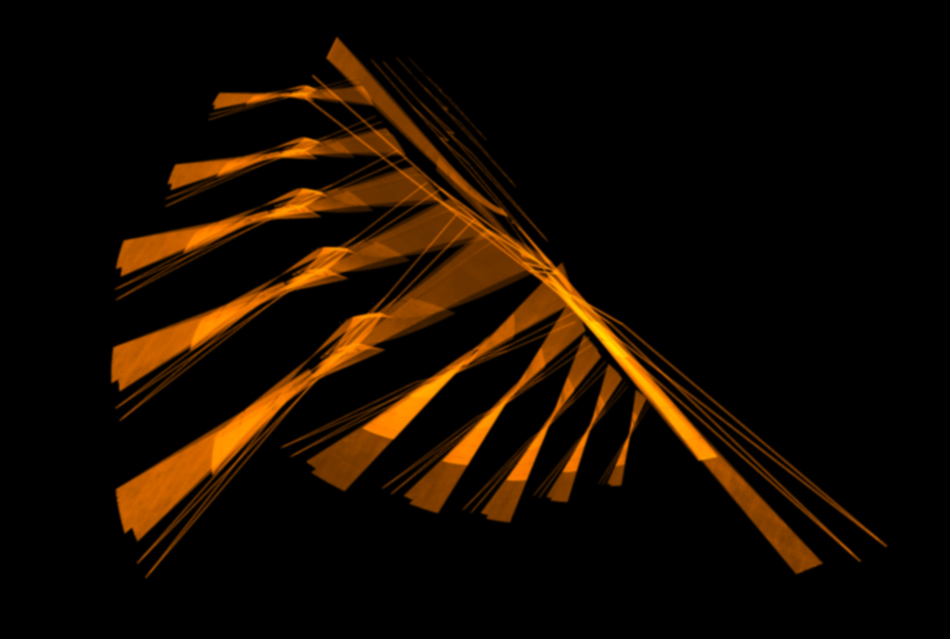
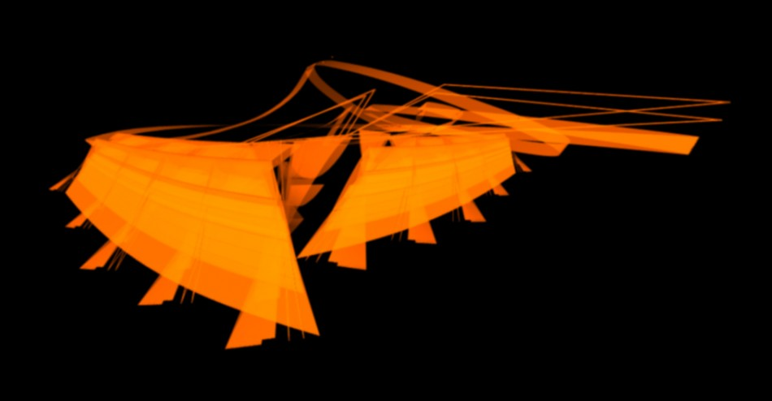
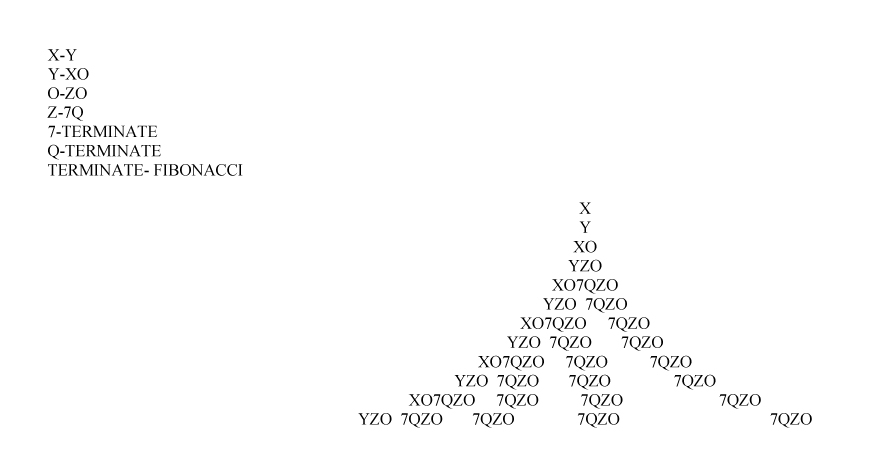
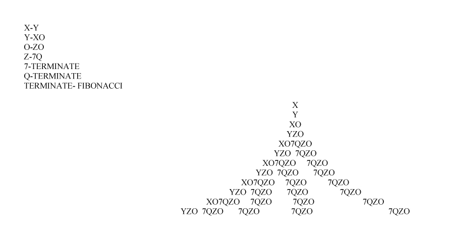

Studio 07 Colorado
Below are a series of 3 dimensional explorations performed with an ancient 3d modeling program called formZ. Its interesting to reflect on the process given that this was a time (2008) when i wasn't writing code. We were essentially generating rule based geometry manually. Looking back this seems crazy however, this process has much to offer. Thinking about and composing geometry piece by piece forces one to think and understand each element in the array and its relationship to its neighbor. For me, this process forced me to think more about the outcome and less about the rules which i believe produces a different result. One down side is that the sheer volume of elements is far less impressive than a computationally driven system.   This project is significant to me for a couple reasons. It was the first time that I created a 3dimensional form far too complicated to build by hand which led to my digital prototyping adventures, it also was the first design that I produced through a series of rules sparking my interest in computational design, a discipline that I practice regularly to this day.I think it is important for designers or all thinkers for that matter to visit their previous works, as outdated as they may seem there is much to gain from reflection.
  
